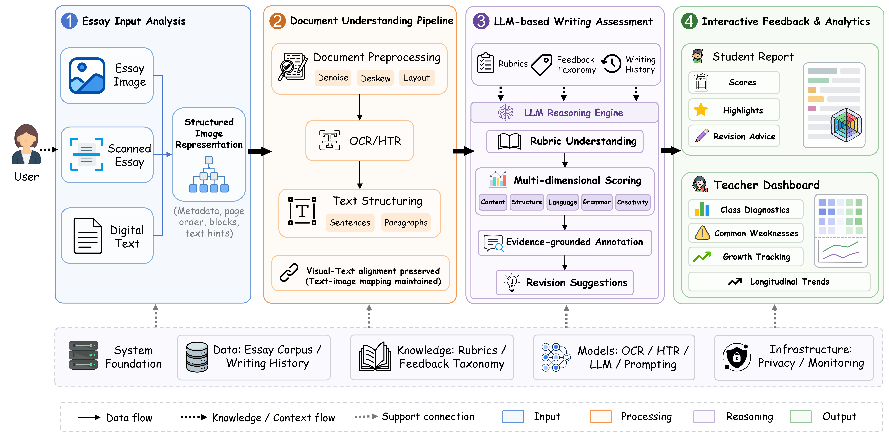

QuickGrade: An Interactive Multimodal Essay Feedback System for K-12 Writing Education
Zhejiang Key Laboratory of Intelligent Education Technology and Application · Hangzhou Xuanzhu Intelligent Technology Co., Ltd.
Demo Video

Overall system architecture of QuickGrade. The workflow connects essay input analysis, document understanding, LLM-based writing assessment, and interactive feedback analytics.
Abstract
Writing assessment in K–12 education is labor-intensive, requiring teachers to evaluate content, organization, logic, language, creativity, and grammar while providing actionable feedback. Existing automated essay scoring tools mainly handle clean digital text, limiting support for handwritten, photographed, or paper-based submissions. We present QuickGrade, an interactive multimodal essay feedback system for classroom writing instruction. Given a photographed essay, scanned document, or digital text, QuickGrade normalizes the document, reconstructs sentence- and paragraph-level structures, and generates rubric-based scores, evidence-grounded comments, and revision suggestions. Through an interactive interface, students can inspect highlighted sentence-level feedback, while teachers can review individual reports, class-level patterns, and longitudinal progress. By supporting a complete workflow from essay submission to feedback generation and teacher-facing analytics, QuickGrade demonstrates how multimodal AI can enable scalable and teacher-in-the-loop writing instruction.